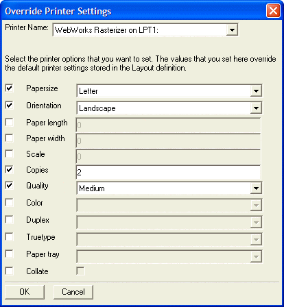

Override Printer Settings Dialog Box
Use the Override Printer Settings dialog box to set the configuration of a printer.
Check at the left if you want to set an option, then select or enter a value in the text/list box at right.
Click OK to proceed or Cancel to discard your changes.

Supported By
Alpha Five Version 5 and Above